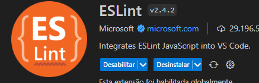
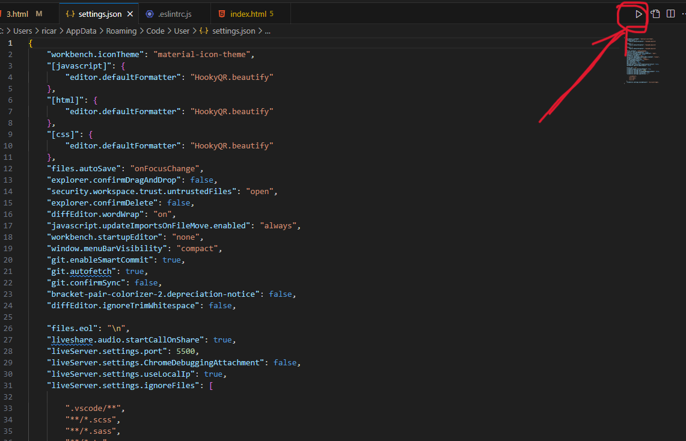
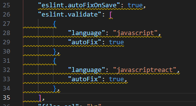

Ele vai te forçar a encontrar o erro no codigo, e vai corrigi-lo, para deixar mais eficiente a programação, ele tambem vai aplicar estilos.
ele vai te forçar a criar um codigo melhor, com o terminal aberto direto na pasta do projeto
Para começar o projeto,
Apos a instalação será preciso configura-lo
E para garantir o funcionamento do eslint será preciso instalar a extenção, no vscode.

Pós instalação da extenção será preciso ir nas configurações do vscode(json).
caminho => configurações => depois clica no triangulo marcado

clicando no botao acima para abrir o arquivo json para editar as configurações

esse codigo serve para permitir e da as ordens para que o eslint possa fazer todas as
adiçoes e modificações no codigo.
Para situações que nao esta nas configurações diretamente colocada no settings.json, pode se usar regras por fora, exceções.
// eslint-disable-next-line
console.log(teste);